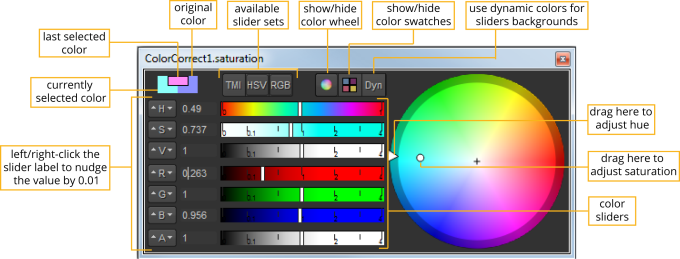

如果你
偏好
>
面板
>
控制面板
>
彩色面板
>
颜色选择器按钮打开
下拉设置为
浮动颜色选择器
,你可以显示颜色滑块和车轮的浮动窗口中按一下
颜色选择器
按钮
.
TIP:
Holding
Ctrl
/
Cmd
and clicking the color picker button opens the alternate color picker to the one specified in the
Preferences
dialog.
通过拖动窗口的一个角来调整窗口的大小，可以将浮动窗口更改为水平窗口。当它足够宽时，滑块会自动变成水平的。

•
从
TMI
,
HSV
,和
RGB
按钮，您可以选择要显示的滑块。
•
色轮有三种状态: 隐藏色轮、显示色轮和显示方形色轮。您可以通过简单地点击这些状态循环
色轮
按钮多次。
•
您可以通过点击选择显示的颜色色板
色样
按钮。
•
如果您希望滑块的背景显示滑块设置为当前位置时颜色的值，请单击
Dyn
按钮。
在浮动窗口中使用色轮
在浮动窗口中使用色轮与使用面板内色轮完全相同; 拖动色轮边缘上的标记来调整色调, 并在车轮内拖动标记以调整饱和度。
但是，您也可以在浮动窗口中平移和缩放色盘:
•
要平移，按
Alt
并将光标拖动到色轮上。
•
要缩放，请按
Alt
并用鼠标中键向左或向右拖动。
•
只需在色轮上单击鼠标中键，即可重置缩放和/或平移。
在浮动窗口中使用颜色滑块
在浮动颜色窗口中使用滑块与使用面板内滑块完全相同。
在浮动窗口中使用色样
当你对一种颜色感到满意时，你可以通过在你想保存它的样本上点击鼠标右键来保存它。这取代了原来的样本。您还可以拖放要保存在任何色板上的颜色来替换它。
滑块上方的矩形在右侧显示原始颜色，在左侧显示当前选定的颜色。当您将光标悬停在此上方时，会出现一个箭头，允许您通过单击矩形将一个复制到另一个。
打开另一个浮动颜色选择器窗口
您可以打开多个颜色选择器浮动窗口，按
Ctrl
/
Cmd
Alt
单击另一个参数的颜色选择器按钮。